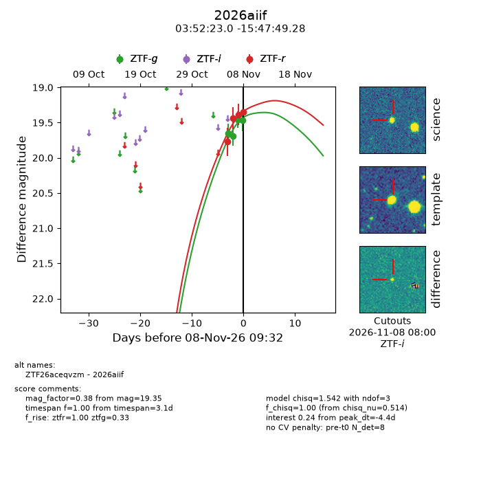
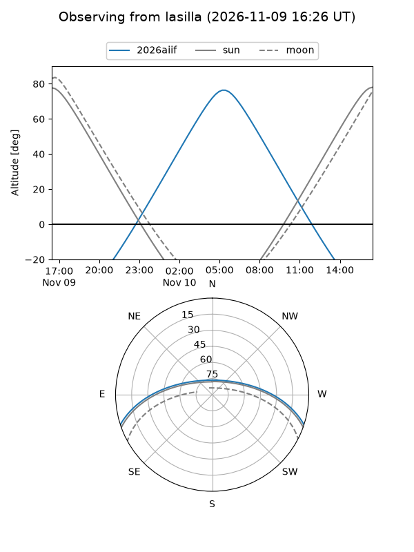
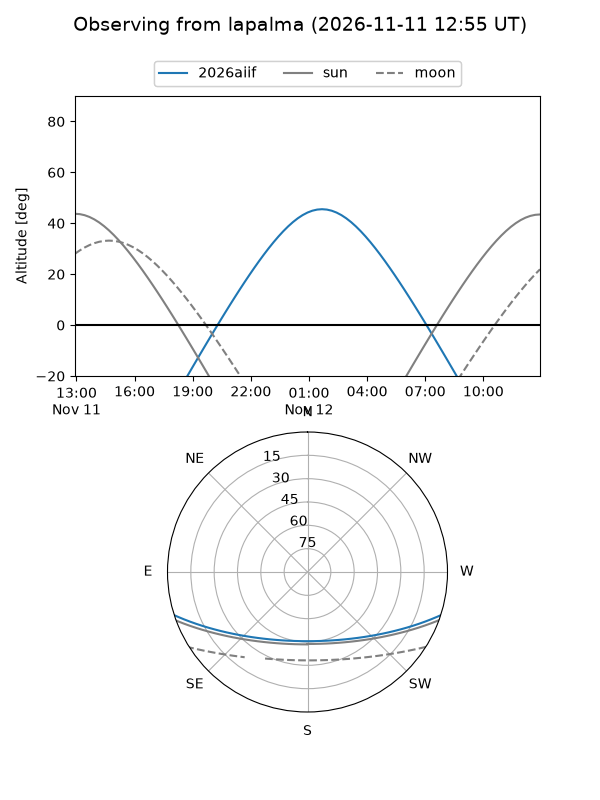
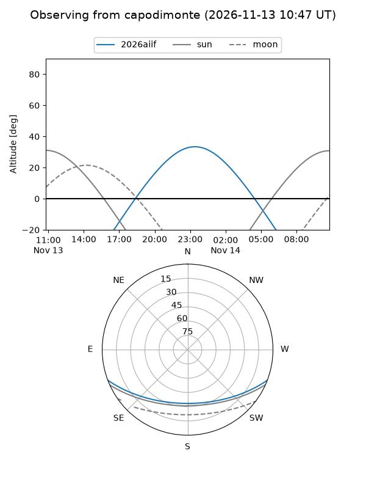
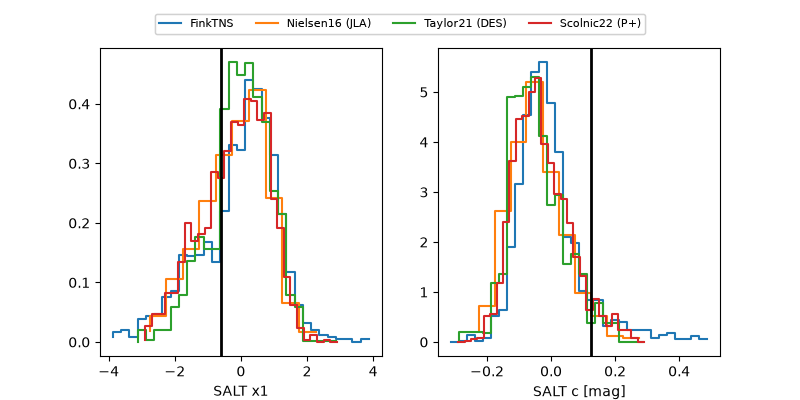

2026aiif
Target 2026aiif at 2026-11-08 09:34
Aliases and brokers:
FINK-ZTF: ztf.fink-portal.org/ZTF26aceqvzm
Lasair-ZTF: lasair-ztf.lsst.ac.uk/objects/ZTF26aceqvzm
ALeRCE-ZTF: alerce.online/object/ZTF26aceqvzm
YSE-PZ: ziggy.ucolick.org/yse/transient_detail/2026aiif
TNS name: wis-tns.org/object/2026aiif
Direct TNS query: direct search
alt names
ZTF26aceqvzm (ztf,fink_ztf)
2026aiif (tns,yse)
Coordinates:
equatorial (ra, dec) = 58.0959,-15.79702
equatorial (HMS+DMS) = 03:52:23.02,-15:47:49.28
galactic (l, b) = (207.3570,-46.65025)
Flags:
peak dt: -4.4
Photometry:
last ztfg=19.46, ztfr=19.35
4 ztfg, 4 ztfr detections
Lightcurve

Visibility



Additional plots
